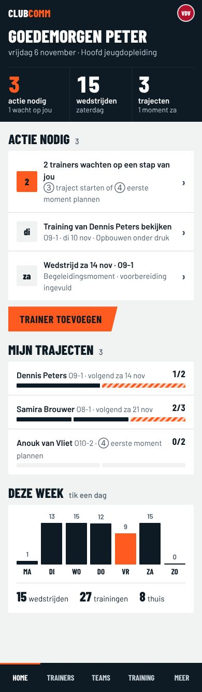
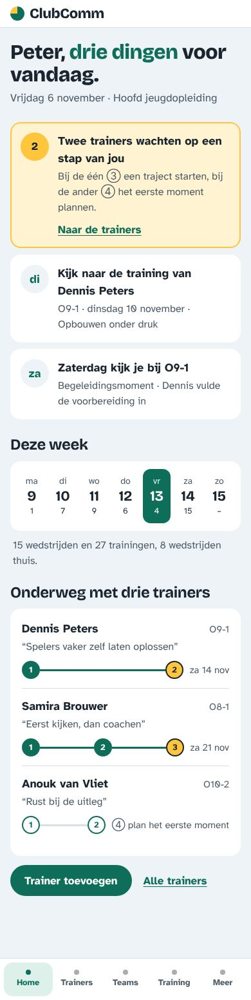
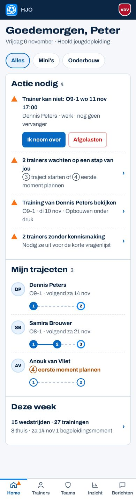
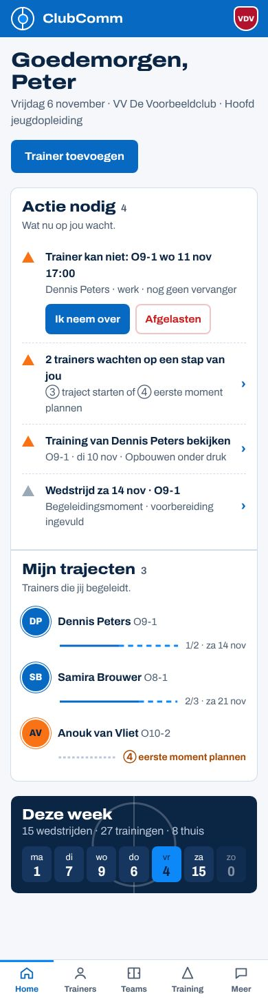
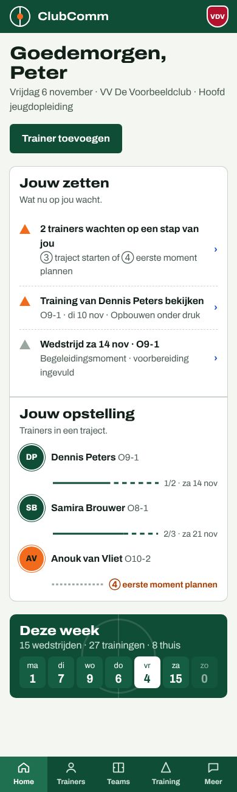
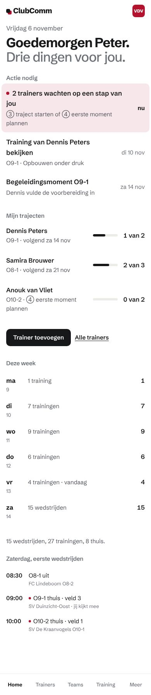

Niet-productieprototypes (Spoor 3, onderzoek). Zelfde inhoud, verzonnen club. Tik een richting voor moodboard, Home, training, componenten en beweging. Bovenaan elke pagina kun je een andere club kiezen.

A · MatchdayKrachtig en sportief: scorebord, condensed letters, aftrap-oranje.
B · LeerlijnMenselijk en lerend: lijnenkaart met stations, hele zinnen, zon-geel = hier ben je.
C2.1 · Krijtbord-blauw verbeterdNa de review: bestaand logo, menu en trainingsbalk zoals de app, rem-maten. Zie c21/REVIEW.md.
C2 · Krijtbord in ClubComm-blauwGekozen richting C in de huidige kleuren; 7 pagina’s.
C · KrijtbordTactisch en grafisch: twee helften, trainers als spelers, pionnen als status.
D · ClubhuisRustig en verfijnd: grafiet en ruimte, de club kleurt het accent.